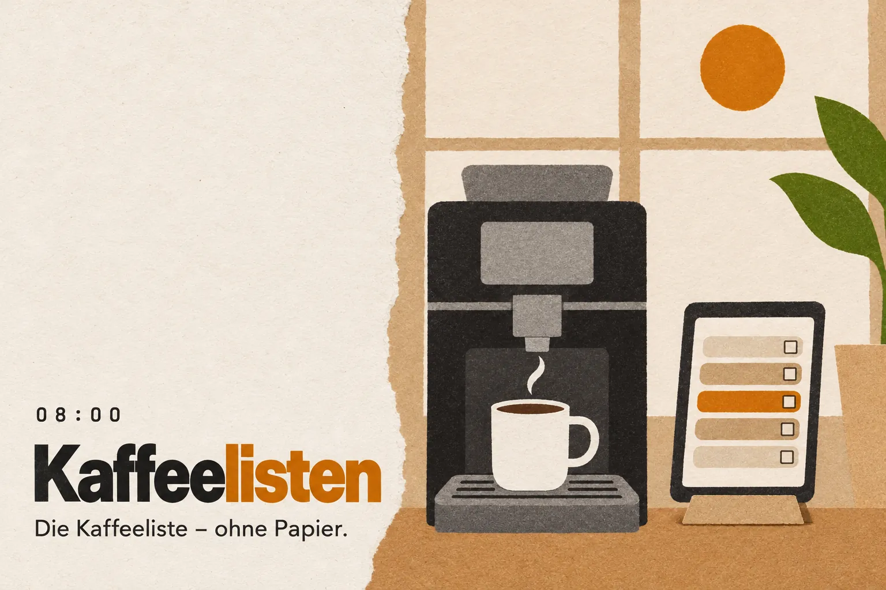
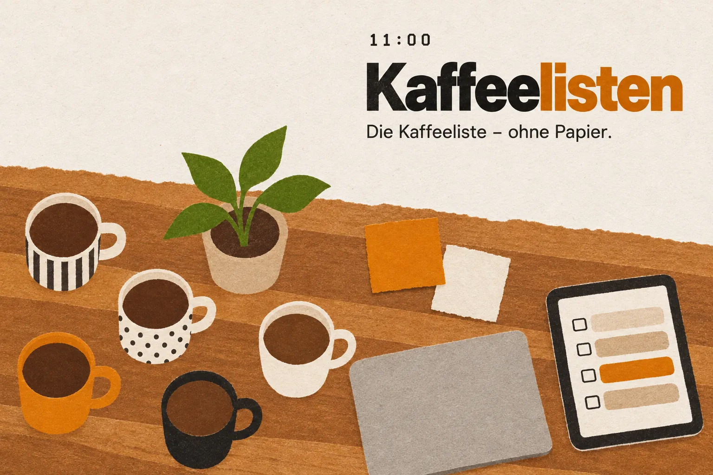
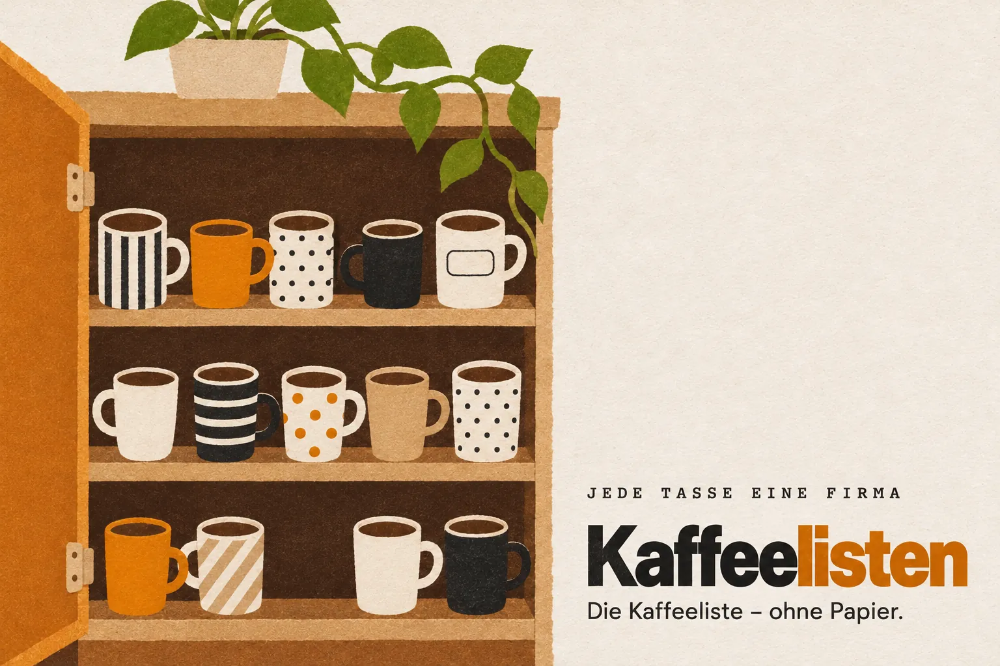
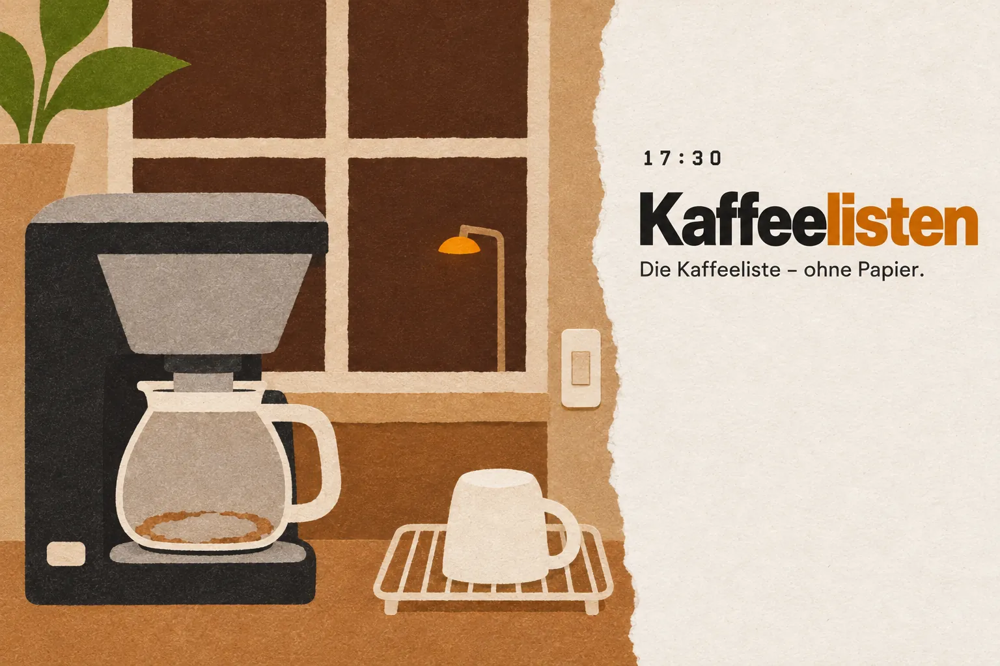
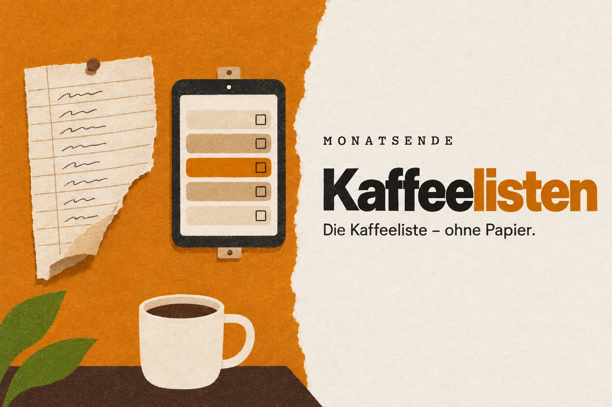
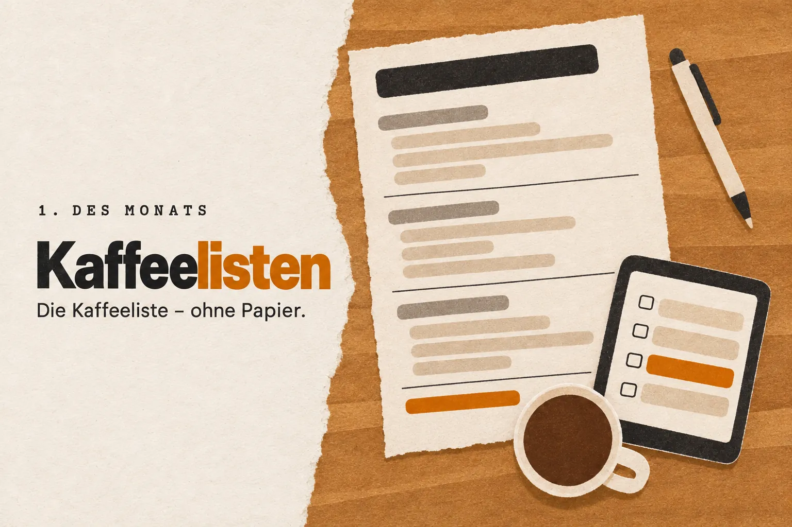

08:00
Die Kaffeeliste – ohne Papier.
Ein Tablet an der Kaffeemaschine ersetzt die Liste an der Wand. Firma antippen, Name antippen, Getränk antippen. Am Monatsende kommt der Bericht von selbst.
- < 15 s pro Buchung
- 0 Logins
- 0 Apps zu installieren

Bisher
Die Liste an der Wand
In fast jeder Gemeinschaftsküche hängt sie: ein Blatt Papier neben der Maschine. Wer einen Kaffee nimmt, macht einen Strich. Am Monatsende zählt jemand zusammen, rechnet aus, wer was schuldet, und geht herum.
Das funktioniert seit Jahren, mehr schlecht als recht. Mancher Strich ist nicht eindeutig, mancher fehlt, und wer zusammenrechnet, ärgert sich still darüber.
Kaffeelisten hängt dort, wo das Blatt hing. Es muss nur eines können: schneller sein als ein Stift.
11:00
Drei Mal tippen, fertig.
- Firma. Das Tablet fragt „Wer bist du?“. Du tippst deine Firma an.
- Name. Dann deinen Namen. Wer keinen eigenen Eintrag hat, bucht für die Firma.
- Getränk. „Was hast du genommen?“ Ein Tipp, kurz bestätigen, gespeichert. Danach setzt sich der Bildschirm von selbst zurück.
Im Stehen, mit einer Hand, die Tasse in der anderen.

Zum Ausprobieren
So sieht es am Tablet aus
Drei Schritte, mit erfundenen Beispieldaten. Nichts wird gespeichert.
Schritt 1 von 3
Wer bist du?
Jede Tasse eine Firma
Firmen, Namen, Getränke
Die Verwaltung legt Firmen, Namen und Getränke einmal an. Niemand registriert sich, niemand braucht ein Passwort. Wer neu im Haus ist, kann den eigenen Namen direkt am Tablet hinzufügen.
Ein Haus mit mehreren kleinen Firmen ist genau der Fall, für den es gebaut ist.

17:30
Abends gibt es nichts zu zählen
Die letzte Kanne läuft durch, draußen wird es dunkel. Jede Buchung ist schon gespeichert, mit Firma, Name und Getränk. Niemand muss etwas abschreiben oder übertragen.

Monatsende
Der Monat schließt sich selbst
Am Monatsende stellt Kaffeelisten alles zusammen, nach Firma und nach Person. Der Bericht geht per E-Mail an die Verwaltung, der Monat wird archiviert, und die Zähler beginnen von vorn.
Das Blatt an der Wand hat ausgedient.

1. des Monats
Am Ersten liegt der Bericht da
Eine Aufstellung pro Monat: gruppiert nach Firma, darunter jede Person mit ihren Getränken und der Summe. Die Verwaltung kann sie direkt weitergeben.
Niemand muss mehr herumgehen und nach 4,80 € fragen.

Kaffeelisten
Ein Tablet an der Maschine. Kein Login, keine App, keine Strichliste.